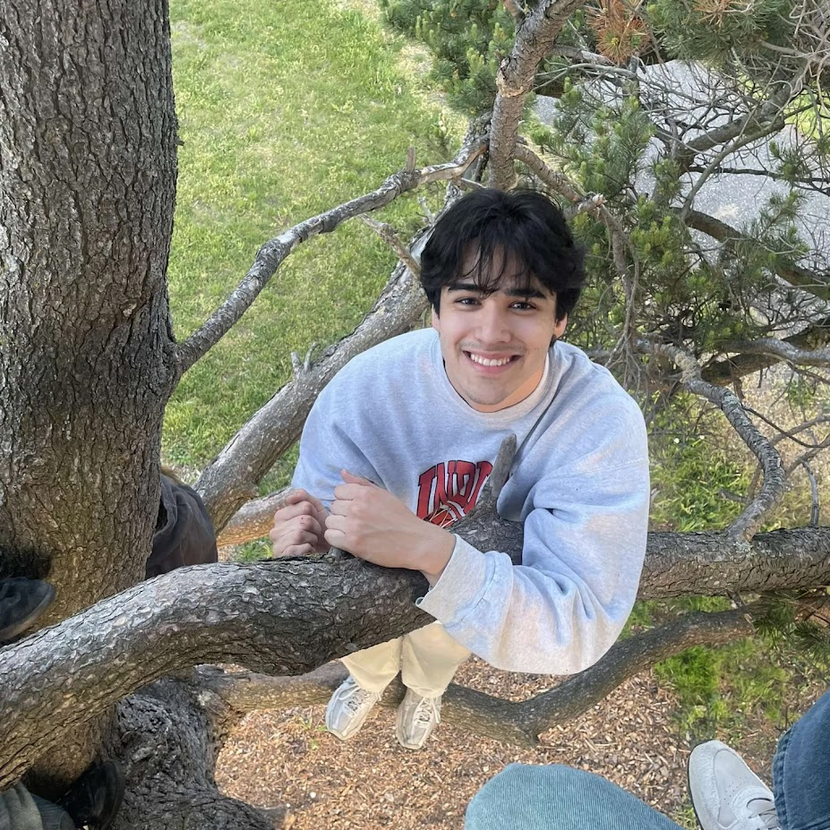

Meet Nate!

I am a third year student who transferred from Western Washington University. I am a Business Administration major with concentrations in Marketing and MIS. I enjoy marketing for the entertainment and sports industry, and as of now that is ultimately where I hope to end up for my career out of college. I enjoy reading, hiking, swimming, skiing, listening to music, playing video games, and cooking. I want to travel all seven continents, make a cool table with secret compartments, and publish a book before I die.
Skills
- Coding | C++, JavaScript, Python
- Languages | Tagalog, French
- Software | Tableau, Microsoft Suite
- Skills | Creative Writing, Leadership
Personal Project
One thing that I did recently as a personal project which isn't at all related to MIS is building a bookshelf with my dad. I am a big reader and have collected books since I was around 11 and I finally got to the point where I wanted a way to store them. My dad and I decided to try to learn woodworking and three weeks during a summer we built and constructed the bookshelf. While it isn't the most beautiful looking thing in the world, it is a constant reminder of a bonding experience and the physical manifestation of weeks of hard work.